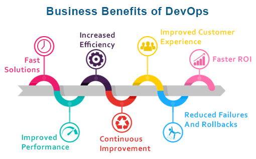
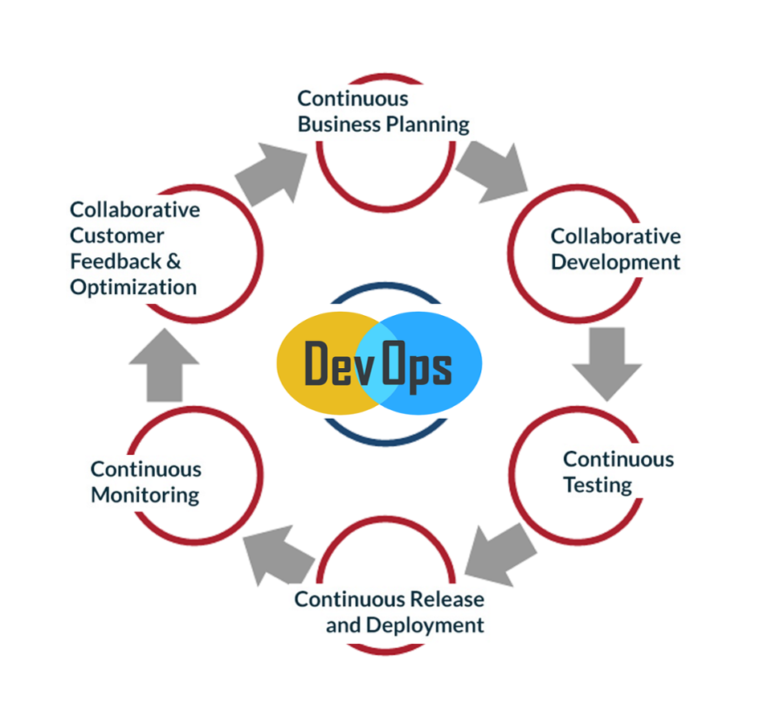

Devops
DevOps is the combination of cultural philosophies, practices, and tools that increases an organization’s ability to deliver applications and services at high velocity: evolving and improving products at a faster pace than
organizations using traditional software development and infrastructure management processes. This speed enables organizations to better serve their customers and compete more effectively in the market.
Under a DevOps model, development and operations teams are no longer “siloed.” Sometimes, these two teams are merged into a single team where the engineers work across the entire application lifecycle, from development and
test to deployment to operations, and develop a range of skills not limited to a single function.

Benifits of Devops
- Speed-Move at high velocity so you can innovate for customers faster, adapt to changing markets better, and grow more efficient at driving business results. The DevOps model enables your developers and operations teams to achieve these results. For example, microservices and continuous delivery let teams take ownership of services and then release updates to them quicker.
- Rapid Delivery-Increase the frequency and pace of releases so you can innovate and improve your product faster. The quicker you can release new features and fix bugs, the faster you can respond to your customers’ needs and build competitive advantage. Continuous integration and continuous delivery are practices that automate the software release process, from build to deploy.
- Reliability-Ensure the quality of application updates and infrastructure changes so you can reliably deliver at a more rapid pace while maintaining a positive experience for end users. Use practices like continuous integration and continuous delivery to test that each change is functional and safe. Monitoring and logging practices help you stay informed of performance in real-time.
- Scale- Operate and manage your infrastructure and development processes at scale. Automation and consistency help you manage complex or changing systems efficiently and with reduced risk. For example, infrastructure as code helps you manage your development, testing, and production environments in a repeatable and more efficient manner.
- Improved Collaboration-Build more effective teams under a DevOps cultural model, which emphasizes values such as ownership and accountability. Developers and operations teams collaborate closely, share many responsibilities, and combine their workflows. This reduces inefficiencies and saves time (e.g. reduced handover periods between developers and operations, writing code that takes into account the environment in which it is run).
- Security- Move quickly while retaining control and preserving compliance. You can adopt a DevOps model without sacrificing security by using automated compliance policies, fine-grained controls, and configuration management techniques. For example, using infrastructure as code and policy as code, you can define and then track compliance at scale.

Devops Practices
- Continuous Integration-Continuous integration is a software development practice where developers regularly merge their code changes into a central repository, after which automated builds and tests are run. The key goals of continuous integration are to find and address bugs quicker, improve software quality, and reduce the time it takes to validate and release new software updates.
- Continuous Delivery-Continuous delivery is a software development practice where code changes are automatically built, tested, and prepared for a release to production. It expands upon continuous integration by deploying all code changes to a testing environment and/or a production environment after the build stage. When continuous delivery is implemented properly, developers will always have a deployment-ready build artifact that has passed through a standardized test process.
- Micro Services-The microservices architecture is a design approach to build a single application as a set of small services. Each service runs in its own process and communicates with other services through a well-defined interface using a lightweight mechanism, typically an HTTP-based application programming interface (API). Microservices are built around business capabilities; each service is scoped to a single purpose. You can use different frameworks or programming languages to write microservices and deploy them independently, as a single service, or as a group of services.
- infrastructure as Code-Infrastructure as code is a practice in which infrastructure is provisioned and managed using code and software development techniques, such as version control and continuous integration. The cloud’s API-driven model enables developers and system administrators to interact with infrastructure programmatically, and at scale, instead of needing to manually set up and configure resources.
- Monitoring & Logging-Organizations monitor metrics and logs to see how application and infrastructure performance impacts the experience of their product’s end user. By capturing, categorizing, and then analyzing data and logs generated by applications and infrastructure, organizations understand how changes or updates impact users, shedding insights into the root causes of problems or unexpected changes.
- Communication & Collaboration-Increased communication and collaboration in an organization is one of the key cultural aspects of DevOps. The use of DevOps tooling and automation of the software delivery process establishes collaboration by physically bringing together the workflows and responsibilities of development and operations.
